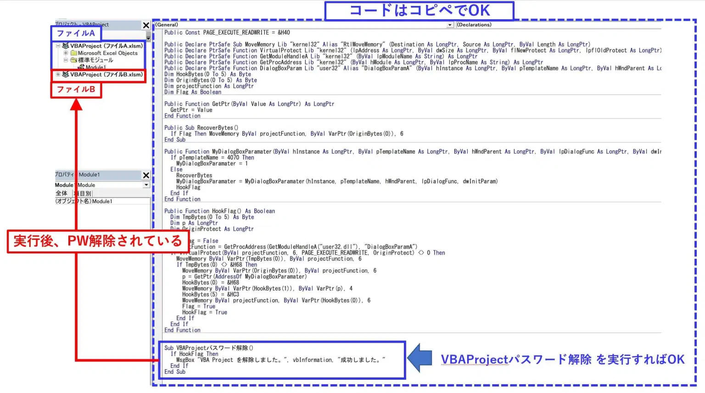

自分が作成した Excel VBA のパスワードを忘れてしまった、ということがありますよね。ここでは Excel VBA のパスワード解除方法を記載します。
このページは私自身のメモを目的に記載しています。自己責任で使用してください。他人が作ったマクロの破壊などに使うのは、絶対にやめましょう。
マクロのパスワード解除とは、「VBAProject パスワード」の解除って意味です。
下図で赤枠で囲ってあるパスワード解除方法について本記事では触れていきます。
EXCELのバージョンによって、使用するコードが若干異なります。
|
違う箇所は、変数の部分ですね。 64bit版だとlongptrという変数を使用しています。 |
Excel 32bit 版はこちら
Public Const PAGE_EXECUTE_READWRITE = &H40
Public Declare PtrSafe Sub MoveMemory Lib "kernel32" Alias "RtlMoveMemory" (Destination As LongPtr, Source As LongPtr, ByVal Length As LongPtr)
Public Declare PtrSafe Function VirtualProtect Lib "kernel32" (lpAddress As LongPtr, ByVal dwSize As LongPtr, ByVal flNewProtect As LongPtr, lpflOldProtect As LongPtr) As LongPtr
Public Declare PtrSafe Function GetModuleHandleA Lib "kernel32" (ByVal lpModuleName As String) As LongPtr
Public Declare PtrSafe Function GetProcAddress Lib "kernel32" (ByVal hModule As LongPtr, ByVal lpProcName As String) As LongPtr
Public Declare PtrSafe Function DialogBoxParam Lib "user32" Alias "DialogBoxParamA" (ByVal hInstance As LongPtr, ByVal pTemplateName As LongPtr, ByVal hWndParent As LongPtr, ByVal lpDialogFunc As LongPtr, ByVal dwInitParam As LongPtr) As Integer
Dim HookBytes(0 To 5) As Byte
Dim OriginBytes(0 To 5) As Byte
Dim projectFunction As Long
Dim Flag As Boolean
Public Function GetPtr(ByVal Value As LongPtr) As LongPtr
GetPtr = Value
End Function
Public Sub RecoverBytes()
If Flag Then MoveMemory ByVal projectFunction, ByVal VarPtr(OriginBytes(0)), 6
End Sub
Public Function MyDialogBoxParamater(ByVal hInstance As LongPtr, ByVal pTemplateName As LongPtr, ByVal hWndParent As LongPtr, ByVal lpDialogFunc As LongPtr, ByVal dwInitParam As LongPtr) As Integer
If pTemplateName = 4070 Then
MyDialogBoxParamater = 1
Else
RecoverBytes
MyDialogBoxParamater = MyDialogBoxParamater(hInstance, pTemplateName, hWndParent, lpDialogFunc, dwInitParam)
HookFlag
End If
End Function
Public Function HookFlag() As Boolean
Dim TmpBytes(0 To 5) As Byte
Dim p As Long
Dim OriginProtect As Long
HookFlag = False
projectFunction = GetProcAddress(GetModuleHandleA("user32.dll"), "DialogBoxParamA")
If VirtualProtect(ByVal projectFunction, 6, PAGE_EXECUTE_READWRITE, OriginProtect) <> 0 Then
MoveMemory ByVal VarPtr(TmpBytes(0)), ByVal projectFunction, 6
If TmpBytes(0) <> &H68 Then
MoveMemory ByVal VarPtr(OriginBytes(0)), ByVal projectFunction, 6
p = GetPtr(AddressOf MyDialogBoxParamater)
HookBytes(0) = &H68
MoveMemory ByVal VarPtr(HookBytes(1)), ByVal VarPtr(p), 4
HookBytes(5) = &HC3
MoveMemory ByVal projectFunction, ByVal VarPtr(HookBytes(0)), 6
Flag = True
HookFlag = True
End If
End If
End Function
Sub VBAProjectパスワード解除()
If HookFlag Then
MsgBox "VBA Project を解除しました。", vbInformation, "成功しました。"
End If
End Sub
Excel 64bit 版はこちら
Public Const PAGE_EXECUTE_READWRITE = &H40
Public Declare PtrSafe Sub MoveMemory Lib "kernel32" Alias "RtlMoveMemory" (Destination As LongPtr, Source As LongPtr, ByVal Length As LongPtr)
Public Declare PtrSafe Function VirtualProtect Lib "kernel32" (lpAddress As LongPtr, ByVal dwSize As LongPtr, ByVal flNewProtect As LongPtr, lpflOldProtect As LongPtr) As LongPtr
Public Declare PtrSafe Function GetModuleHandleA Lib "kernel32" (ByVal lpModuleName As String) As LongPtr
Public Declare PtrSafe Function GetProcAddress Lib "kernel32" (ByVal hModule As LongPtr, ByVal lpProcName As String) As LongPtr
Public Declare PtrSafe Function DialogBoxParam Lib "user32" Alias "DialogBoxParamA" (ByVal hInstance As LongPtr, ByVal pTemplateName As LongPtr, ByVal hWndParent As LongPtr, ByVal lpDialogFunc As LongPtr, ByVal dwInitParam As LongPtr) As Integer
Dim HookBytes(0 To 5) As Byte
Dim OriginBytes(0 To 5) As Byte
Dim projectFunction As LongPtr
Dim Flag As Boolean
Public Function GetPtr(ByVal Value As LongPtr) As LongPtr
GetPtr = Value
End Function
Public Sub RecoverBytes()
If Flag Then MoveMemory ByVal projectFunction, ByVal VarPtr(OriginBytes(0)), 6
End Sub
Public Function MyDialogBoxParamater(ByVal hInstance As LongPtr, ByVal pTemplateName As LongPtr, ByVal hWndParent As LongPtr, ByVal lpDialogFunc As LongPtr, ByVal dwInitParam As LongPtr) As Integer
If pTemplateName = 4070 Then
MyDialogBoxParamater = 1
Else
RecoverBytes
MyDialogBoxParamater = MyDialogBoxParamater(hInstance, pTemplateName, hWndParent, lpDialogFunc, dwInitParam)
HookFlag
End If
End Function
Public Function HookFlag() As Boolean
Dim TmpBytes(0 To 5) As Byte
Dim p As LongPtr
Dim OriginProtect As LongPtr
HookFlag = False
projectFunction = GetProcAddress(GetModuleHandleA("user32.dll"), "DialogBoxParamA")
If VirtualProtect(ByVal projectFunction, 6, PAGE_EXECUTE_READWRITE, OriginProtect) <> 0 Then
MoveMemory ByVal VarPtr(TmpBytes(0)), ByVal projectFunction, 6
If TmpBytes(0) <> &H68 Then
MoveMemory ByVal VarPtr(OriginBytes(0)), ByVal projectFunction, 6
p = GetPtr(AddressOf MyDialogBoxParamater)
HookBytes(0) = &H68
MoveMemory ByVal VarPtr(HookBytes(1)), ByVal VarPtr(p), 4
HookBytes(5) = &HC3
MoveMemory ByVal projectFunction, ByVal VarPtr(HookBytes(0)), 6
Flag = True
HookFlag = True
End If
End If
End Function
Sub VBAProjectパスワード解除()
If HookFlag Then
MsgBox "VBA Project を解除しました。", vbInformation, "成功しました。"
End If
End Sub
使い方は、以下の通り。

注意ポイント
尚、Bファイルを閉じてしまうとPWロックが復活してしまいますので、
もしPW自体を削除したい場合は、PWロック解除後に、
BファイルのVBE側で
「ツール」→「VBAProjectのプロパティ」
から設定されたパスワードを削除しましょう。
そうすればPW復活はしなくなります。
具体的には、以下のキャプチャの通りの状態にしてあげましょう。
注意
[2022-09-16] 久し振りに上記の方法を試してみたところ、最後のパスワードを外すところで Excel が再起動してしまいました。結果、私はパスワードを解除することができませんでした。何か間違えたか、または Microsoft がセキュリティ対策をしたのかもしれません。
参考[5] に記載の方法を使うことでパスワード解除できたので、それぞれ試してみても良いかも。
本ページの情報は、特記無い限り下記 MIT ライセンスで提供されます。
|
MIT License Copyright (c) 2021 Kinoshita Hidetoshi Permission is hereby granted, free of charge, to any person obtaining a copy of this software and associated documentation files (the "Software"), to deal in the Software without restriction, including without limitation the rights to use, copy, modify, merge, publish, distribute, sublicense, and/or sell copies of the Software, and to permit persons to whom the Software is furnished to do so, subject to the following conditions: The above copyright notice and this permission notice shall be included in all copies or substantial portions of the Software. THE SOFTWARE IS PROVIDED "AS IS", WITHOUT WARRANTY OF ANY KIND, EXPRESS OR IMPLIED, INCLUDING BUT NOT LIMITED TO THE WARRANTIES OF MERCHANTABILITY, FITNESS FOR A PARTICULAR PURPOSE AND NONINFRINGEMENT. IN NO EVENT SHALL THE AUTHORS OR COPYRIGHT HOLDERS BE LIABLE FOR ANY CLAIM, DAMAGES OR OTHER LIABILITY, WHETHER IN AN ACTION OF CONTRACT, TORT OR OTHERWISE, ARISING FROM, OUT OF OR IN CONNECTION WITH THE SOFTWARE OR THE USE OR OTHER DEALINGS IN THE SOFTWARE. |
| 2022-09-16 | - | 説明追記 |
| 2021-09-09 | - | 新規作成 |